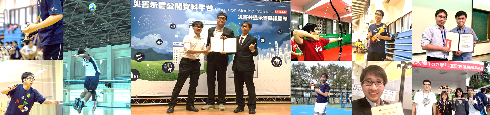

Awards & Certificates
“I always aim to overcome my limitations.”

Research Awards
| 2021 | Selected, Journal Paper Publication Grants for Doctoral Students at Dept. of Geography | NTU, Taiwan |
| 2020 | The Second Prize, 2020 Canada - Taiwan Bilateral Conference on Nutrition, Health, Benefit and Innovative Processing of Whole Grains and Pulses | Taichung, Taiwan |
| 2019 | The Third Prize, 2019 International Conference on Grain Industry Development and Annual Meeting of Taiwan Grain Industry Association (TGiA) | Taichung, Taiwan |
| 2018 | Young Scientist Award, 2nd CiC Students’ Workshop: Driving Sustainable Development | Tsukuba, Japan |
| 2014 | The First Prize, The 15th Cross-Strait Symposium on Environmental Resources and Ecological Conservation | Zhangjiajie, China |
| 2013 | The Second Prize, The 14th Cross-Strait Symposium on Environmental Resources and Ecological Conservation | Kunming, China |
| 2011 | The First Prize, The 12th Cross-Strait Symposium on Environmental Resources and Ecological Conservation | Nanchang, China |
| 2011 | Selected (Highest), Undergraduate Student Thesis Presentation in Class of 2012 | NTUE, Taiwan |
Competition Awards
| 2023 | AI Junior Award, AI EXPO Taiwan 2023 | DIGITIMES, Taiwan |
| 2014 | The Third Prize, 2014 Disaster Prevention and Warning Application in APP Competition | Taipei, Taiwan |
Education Awards
| 2023 | Selected, Probability and Statistics (I) - Digital Excellent Course, Chung Yuan Christian University | Taoyuan, Taiwan |
Scholarship and Grants
| 2020 | NetSci-X 2020 Travel Grants, NetSci-X 2020, Waseda University | Tokyo, Japan |
| 2020 | College of Science Travel Grants for International Conference, College of Science | NTU, Taiwan |
| 2020 | Honorary Membership, The Phi Tau Phi Scholastic Honor Society of the Republic of China | Taipei, Taiwan |
| 2020 | Academic Excellence Award, Department of Food Science, Nutrition, and Nutraceutical Biotechnology | USC, Taiwan |
| 2019-2020 | Grant for Ph.D. Candidates in the Humanities and Social Sciences to Write Doctoral Thesis, Ministry of Science and Technology | Taipei, Taiwan |
| 2019 | College of Science Travel Grants for International Conference, College of Science | NTU, Taiwan |
| 2018-2019 | Presidential Award, Department of Food Science, Nutrition, and Nutraceutical Biotechnology (Fall’18, Spring’19) | USC, Taiwan |
| 2018 | Travel Grants for 2018 Tsukuba Global Science Week, NTU and Tsukuba University | Taiwan & Japan |
| 2017-2018 | Graduate Student Representative of College of Science, College of Science | NTU, Taiwan |
| 2014 | Budget Supplement for Graduated Student Attending International Conference, Ministry of Science and Technology | Taipei, Taiwan |
| 2010-2011 | Presidential Award, Department of Social and Regional Development (Spring’10, Fall’11) | NTUE, Taiwan |
Certificates
| 1 | Emergency Medical Technician Level 1, National Taiwan University Hospital |
| 2 | Scanning Electron Microscopy Operating License, National Taiwan University |
| 3 | X-ray Diffraction Operating License, National Taiwan University |
| 4 | Chinese Tour Leader Qualification, Ministry of Examination |
| 5 | Chinese Tour Guide Qualification, Ministry of Examination |
| 6 | Elementary Teacher Qualification Examination, Ministry of Education |
| 7 | National Volleyball Referee Level C, Chinese Taipei Volleyball Association |
| 8 | Primary Planner, Taiwan Business Strategy Assciation |
| 9 | Lifeguard Certificate, Chinese Taipei Water Life Saving Association |
| 10 | Lifeguard Practice License, Sport Administration, Ministry of Education |
| 11 | Swimming Coach Certificate Level C, Water Life Saving Association New Taipei City |
| 12 | Swimming Coach Certificate Level B, Water Life Saving Association New Taipei City |
| 13 | HACCP Controlling Primary Qualification, Chinese HACCP Development Association |
| 14 | HACCP Controlling Advanced Qualification, Chinese HACCP Development Association |
Sports
| 2023 | Silver Medal, Badminton Championship | CYCU |
| 2017 | Silver Medal, Badminton Championship @ College of Science | NTU |
| 2014 | Bronze Medal, 200m Relay @ NTU Swimming Competition | NTU |
| 2013 | Silver Medal, 200m Relay @ NTU Athletic Meet | NTU |
| 2013 | Sixth Place, 400m Relay @ NTU Athletic Meet | NTU |
| 2012 | Gold Medal, 50m Freestyle @ NTUE Athletic Meet | NTUE |
| 2012 | Silver Medal, 50m Breaststroke @ NTUE Athletic Meet | NTUE |
| 2012 | Gold Medal NTUE Volleyball Championship | NTUE |
| 2012 | Gold Medal Volleyball Championship @ Social Education Cup | NTCU |
| 2012 | Gold Medal Volleyball Championship @ North Social Cup | NTUE |
| 2012 | Gold Medal TMUE-NTUE Volleyball Championship | NTUE |
| 2011 | Gold Medal NTUE Volleyball Championship | NTUE |
| 2011 | Silver Medal NTUE Badminton Championship | NTUE |
| 2011 | Gold Medal Volleyball Championship @ Social Education Cup | NHCUE |
| 2011 | Gold Medal Volleyball Championship @ North Social Cup | NTHU |
| 2011 | Gold Medal TMUE-NTUE Volleyball Championship | TMUE |
| 2010 | Bronze Medal NTUE Volleyball Championship | NTUE |
| 2010 | Gold Medal Volleyball Championship @ Social Education Cup | NTUE |
| 2010 | Gold Medal TMUE-NTUE Volleyball Championship | NTUE |
| 2009 | Silver Medal Volleyball Championship @ Social Education Cup | TMUE |
| 2009 | Gold Medal TMUE-NTUE Volleyball Championship | TMUE |